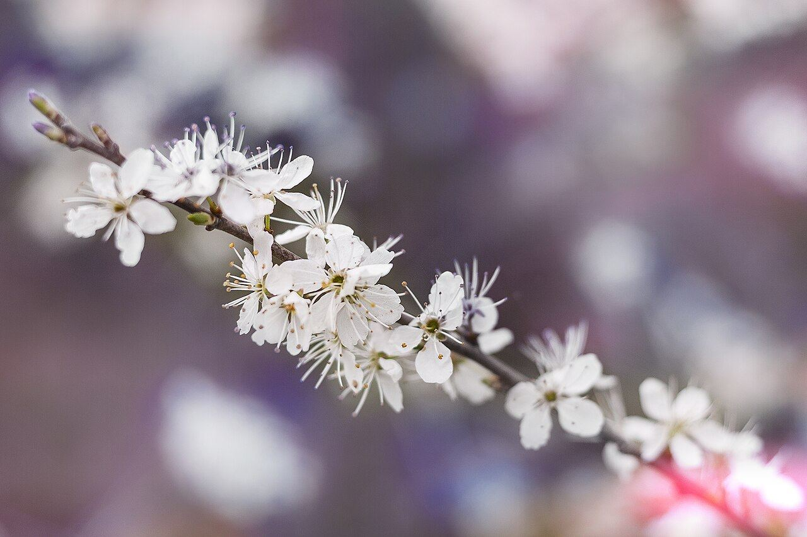
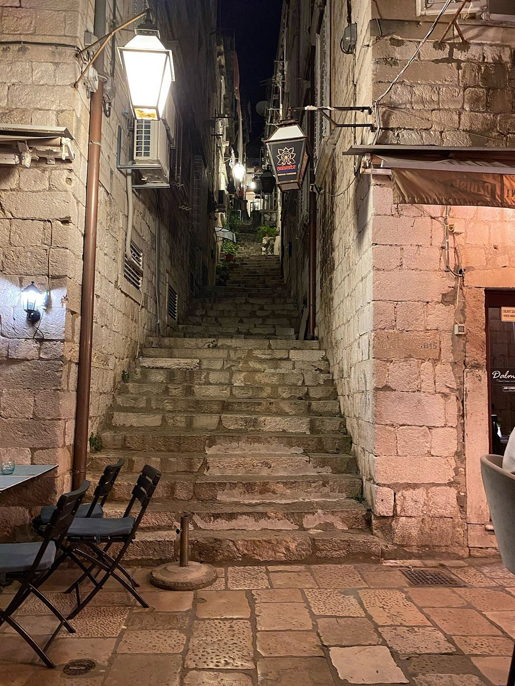
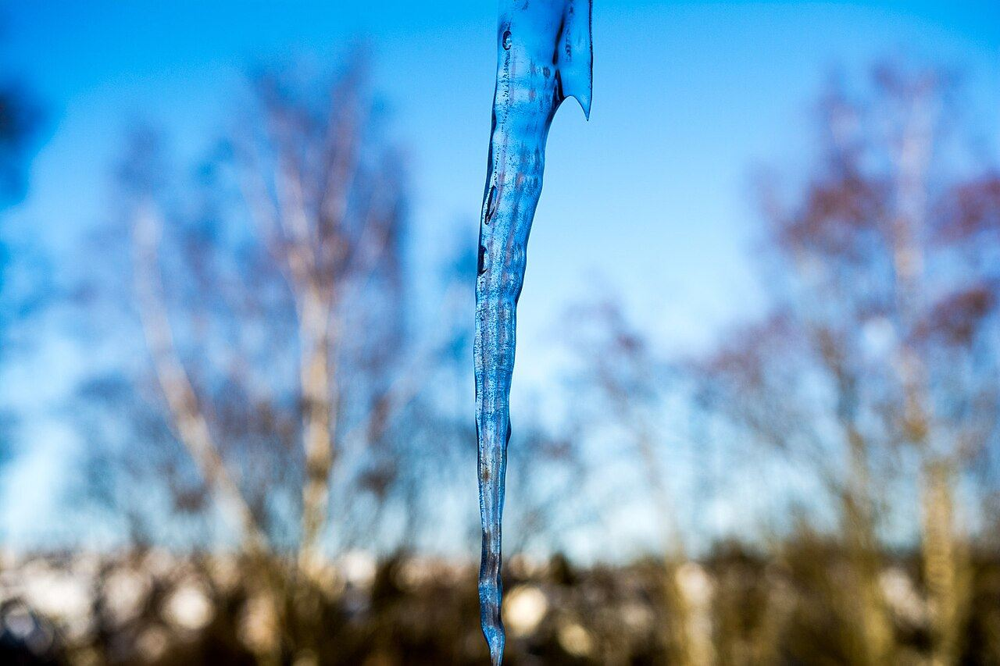
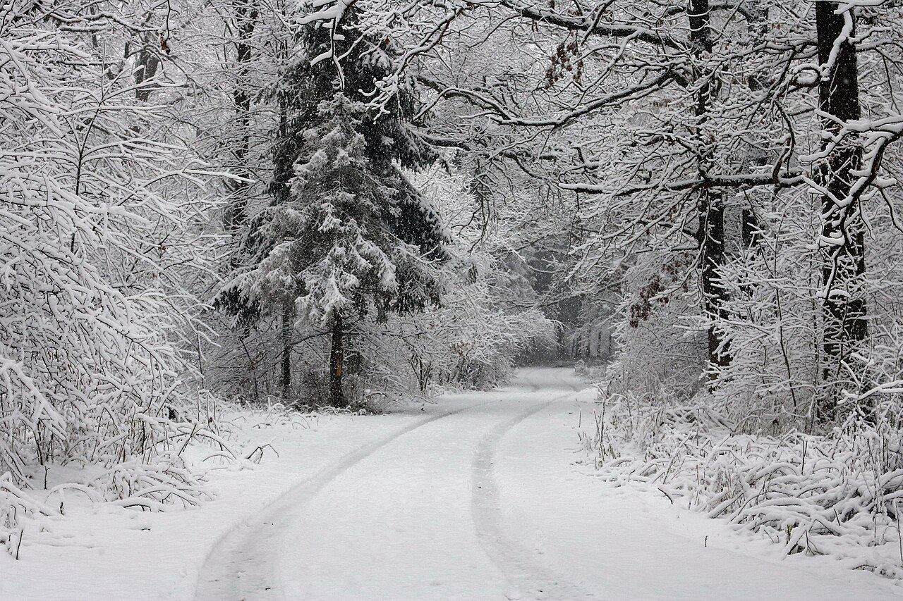
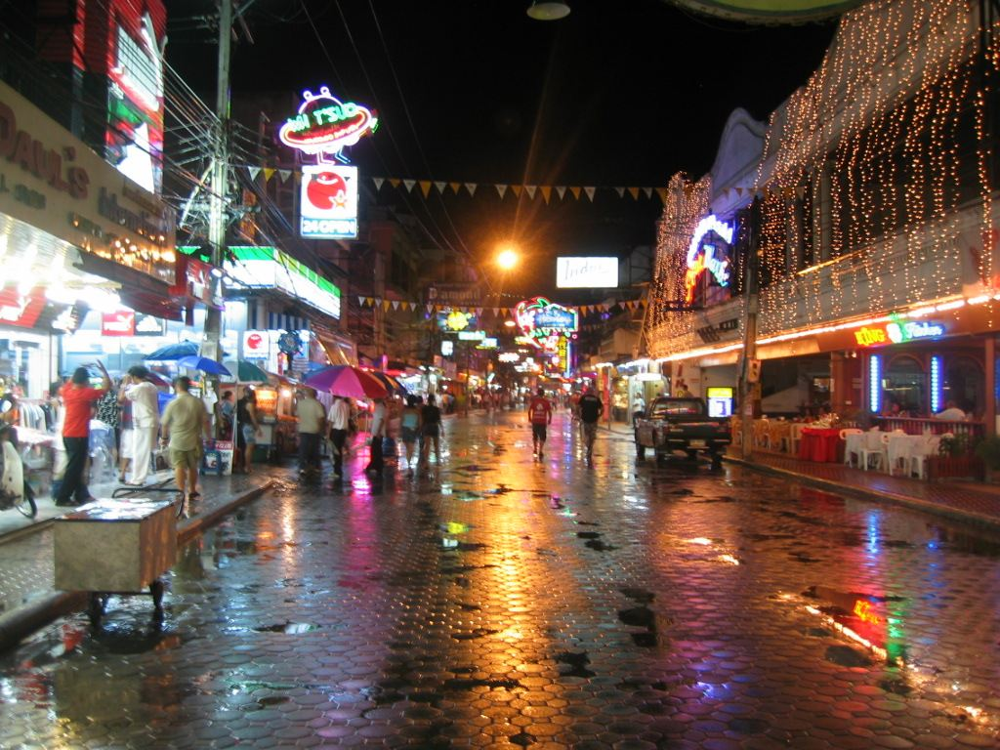
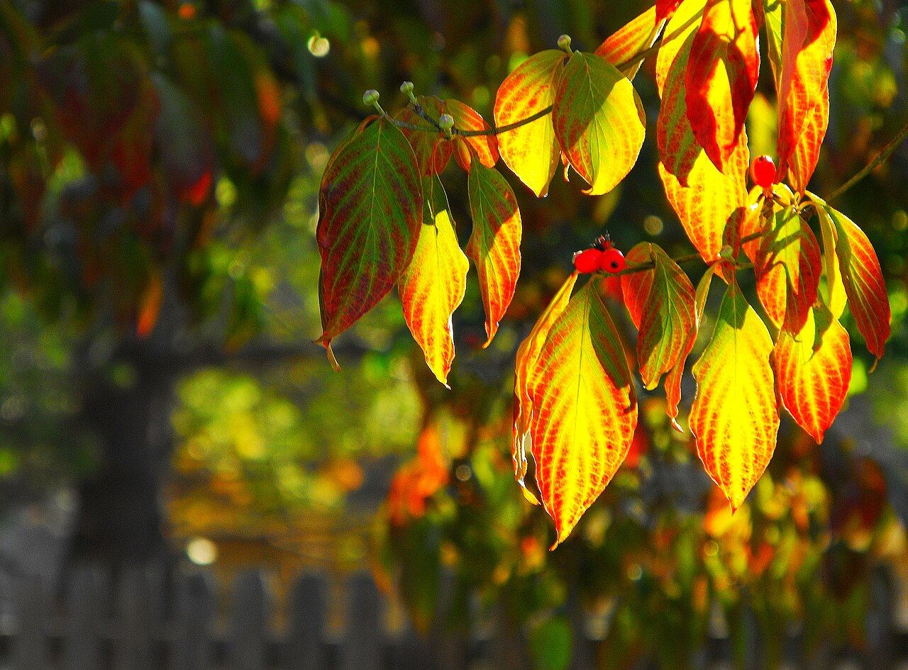
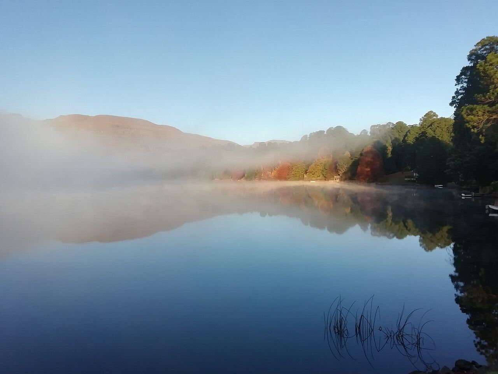
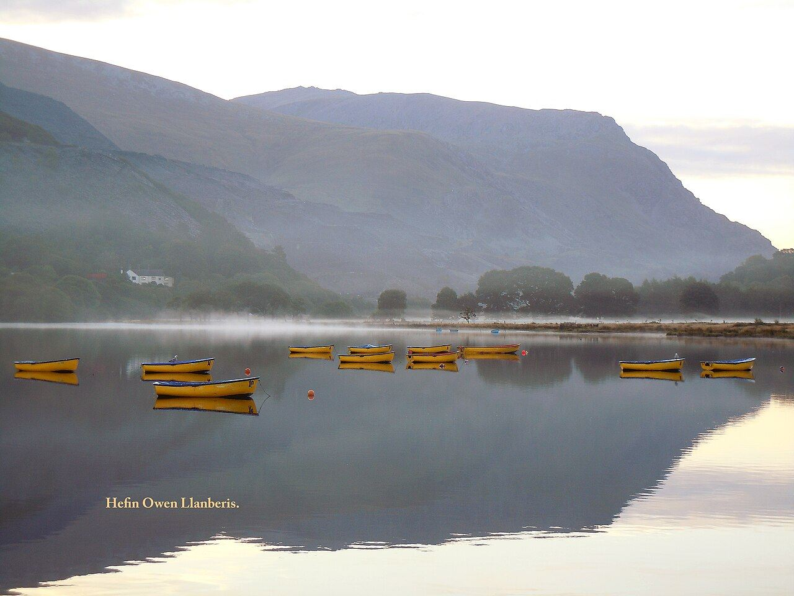
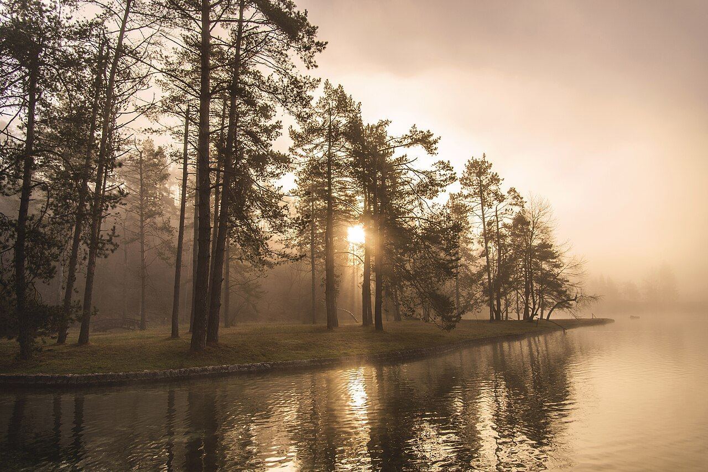
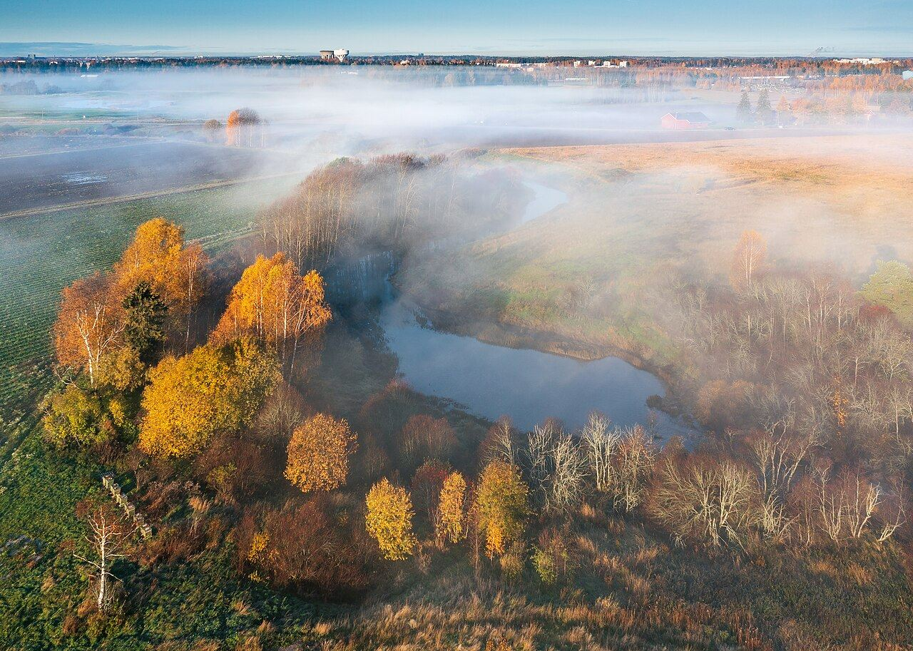

Vanessa von Wieding nutellavan · CC0

Furkan Akkurt · CC BY-SA 4.0
Melsj · CC BY-SA 4.0

User:GorillaWarfare · CC BY-SA 1.0

John Sutton · CC BY-SA 2.0

Bell2020 · CC BY 4.0

Bernhard Hanakam · CC BY-SA 3.0

George Chernilevsky · Public domain

Susulyka · CC BY-SA 4.0

kishjar? from Moscow, Russia · CC BY 4.0

Kyle Simourd · CC BY 2.0

Emmanuel Huybrechts from Laval, Canada · CC BY 2.0

Frank Vincentz · CC BY-SA 3.0

Frank Vincentz · CC BY-SA 3.0

David Martin · CC BY-SA 2.0

MICHAEL BROWN · CC BY 2.0

PuellaMarina · CC BY-SA 4.0

Hefin Owen from Wales · CC BY-SA 2.0

Dreamy Pixel · CC BY 4.0

Ximonic (Simo Räsänen) · CC BY 3.0

Ximonic (Simo Räsänen) · CC BY 3.0